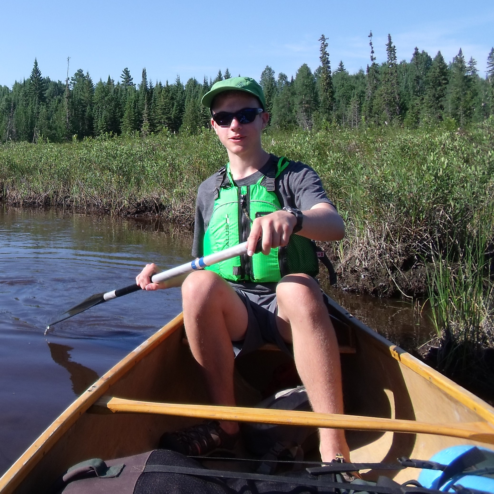

Ever since I was little, I was going on camping trips with my family; my father is an outdoor enthusiast. My family goes on a canoe trip just about every summer, and recently we’ve been doing whitewater paddling down various rivers in Northern Ontario. I personally like whitewater canoeing a lot more than lake paddling because of the added difficulty and teamwork involved. Through the Scouts Canada program, I’ve also been exposed to lightweight backpacking trips and winter camping.
My most recent trip was a 12-Day canoe trip down the Missinaibi River. We went from Dog Lake to Mattice, with a lot of rain and whitewater in between. Below is a video I made from the GoPro footage and pictures taken on the trip. I Edited it all in Adobe Premiere Pro, and there's a longer version for those interested in all the whitewater.